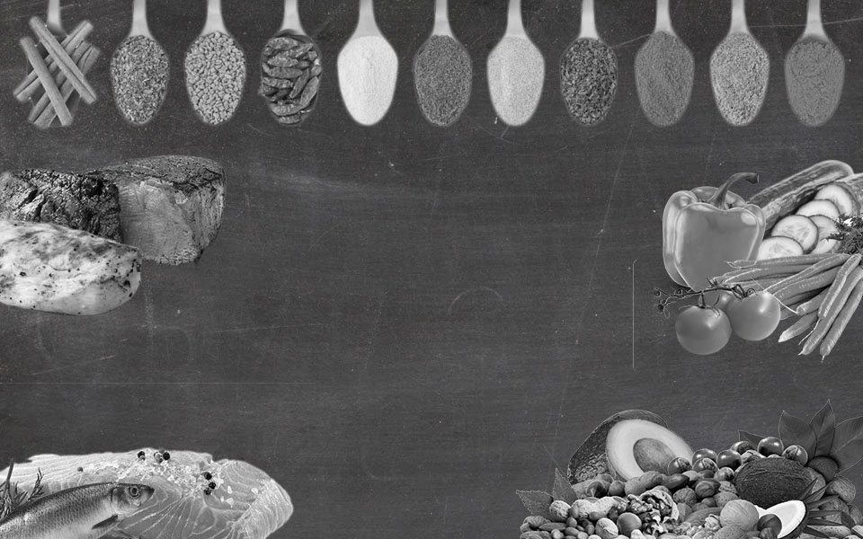

Cuisine uitgeverij BV.
Cuisine is een kleine uitgeverij gevestigd in Amsterdam. Door de jaren heen heeft het bedrijf zich gespecialiseerd in het uitgeven van kookboeken. Om onze klanten optimaal te kunnen bedienen hebben we onze diensten uitgebreid naar het internet. Op onze site vind je de allernieuwste kookboeken van bekende koks, diëtisten en food deskundigen.
Een gezonde levensstijl wordt voor meer en meer mensen steeds belangrijker. Daarom heeft Cuisine ervoor gekozen om u iedere week een weekmenu voor te schotelen met hierin lekkere, gevarieerde en gezonde recepten. Koken is leuk en gezond eten kan ontzettend lekker zijn!
De basis van onze recepten bestaat uit 3 belangrijke bouwstoffen, namelijk: koolhydraten, vetten en eiwitten. Onderstaand vind u vijf belangrijke voedingsgroepen die rijk zijn aan een of meerdere van deze bouwstoffen. Klik op de door u gewenste productgroep voor meer informatie.
Kruiden
Je kunt in de keuken verse of gedroogde kruiden of specerijen gebruiken. Ze geven gerechten meer smaak. Ze zijn geschikt om zout mee te vervangen. Het is namelijk niet goed om te veel zout binnen te krijgen. Producten als brood bevatten namelijk al veel zout.
Vlees
Onbewerkt mager vlees past in een gezond eetpatroon, vooral vanwege de eiwitten, vitamines en mineralen. Het is niet nodig om vlees te eten, je kunt het vervangen door andere producten. Teveel of bewerkt vlees eten kan ook nadelige gevolgen hebben.
Groenten
Het advies is om minimaal 250 gram groente per dag te eten. Groente staat in de Schijf van Vijf. Groente levert weinig calorieën en veel voedingsstoffen. Groente geeft veel voordelen voor de gezondheid en hangt samen met een lager risico op chronische ziekten.
Vis
Vis is onderdeel van een gezonde voeding. Het staat in de Schijf van Vijf. Vis is goed voor de gezondheid. Visvetzuren zijn goed voor je hart en bloedvaten. Daarom is het advies 1 keer per week vis te eten. Bij voorkeur vette vis, zoals makreel haring, sardines of zalm.
Noten
Noten leveren ijzer, vitamine E en vitamine B1. Het zijn goede vegetarische keuzes. In noten zit veel onverzadigd vet. Het eten van ongezouten noten beschermt tegen bepaalde hart- en vaatziekten. Het eten van ongezouten noten verlaagt bovendien het LDL-cholesterol.
